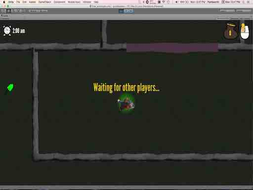

Gone By Dawn
Team project for EECS 370: Game Design. A fast-paced top-down multiplayer game about
graverobbing. Developed on a 4-person
team as part of a game design class. I focused on UI development,
animation,
and aesthetics – all the visuals in the game were created using stopmotion animation on
real
clay objects, which were later converted to sprites for Unity.